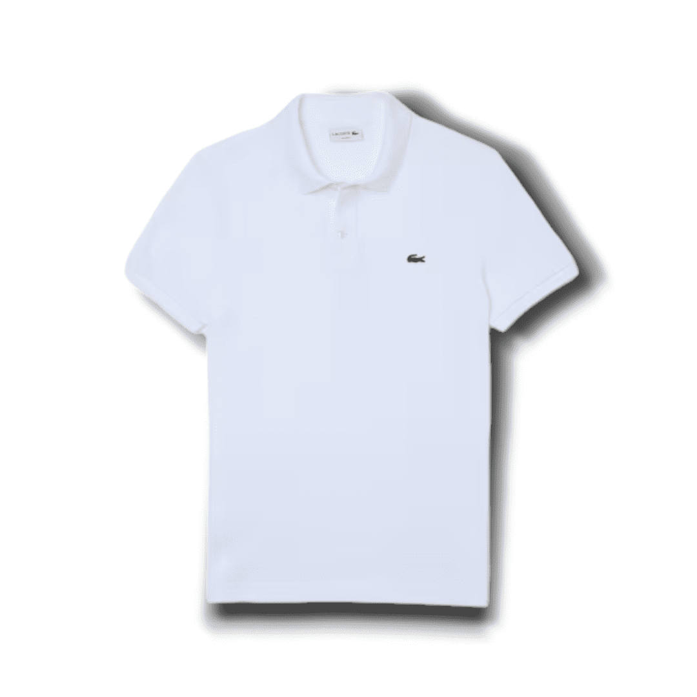
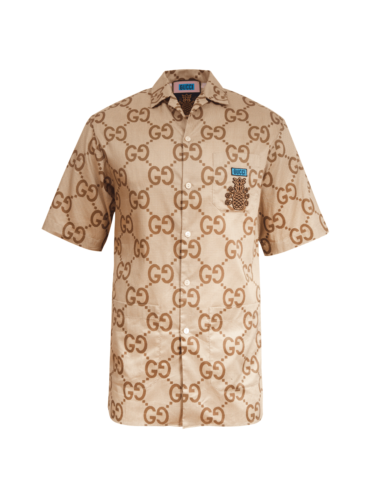
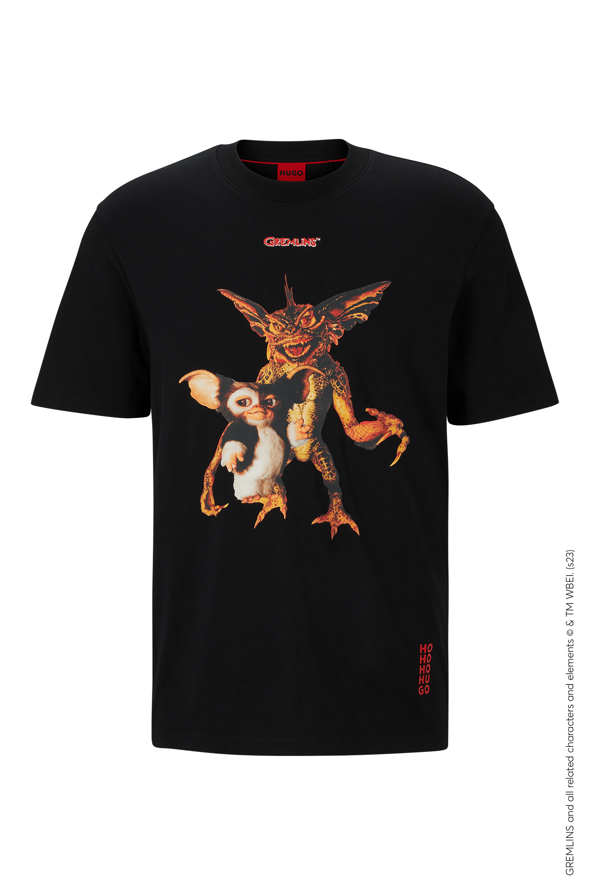

A elegância do design e a qualidade do vestuário continuam a ser hoje o grande elemento diferenciador da Lacoste. Esses atributos são a razão de sua notoriedade e popularidade, bem como a razão pela qual vale a pena investir um pouco mais para usar suas roupas.
As camisetas Gucci são confeccionadas com materiais de alta qualidade, refletindo o compromisso da marca com a durabilidade e o conforto: Algodão pima: conhecido por sua suavidade e durabilidade, o algodão pima é usado nas camisetas Gucci, proporcionando um toque macio e um uso confortável.
 Acesse aquiA Camisa Hugo Boss é um ícone de elegância masculina, produzida pela prestigiada marca Hugo Boss, reconhecida por sua excelência na moda masculina. Feita de tecidos de alta qualidade, como algodão e elastano, oferece conforto, durabilidade e um ajuste impecável ao corpo. Com modelagem Slim Fit, destaca a silhueta masculina com refinamento. O discreto logotipo Hugo Boss adiciona um toque de sofisticação.
 Acesse aqui